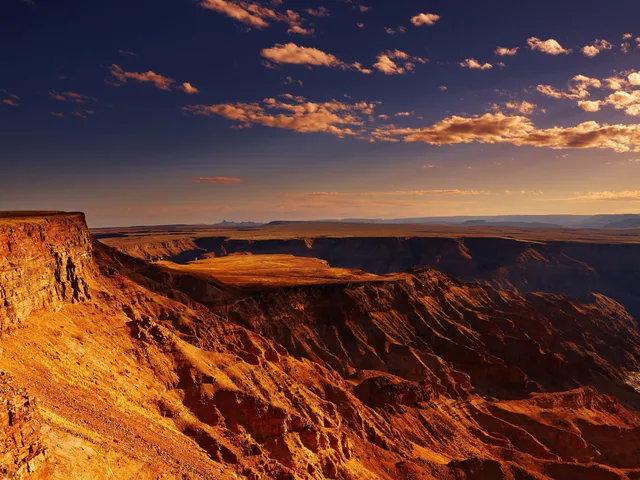
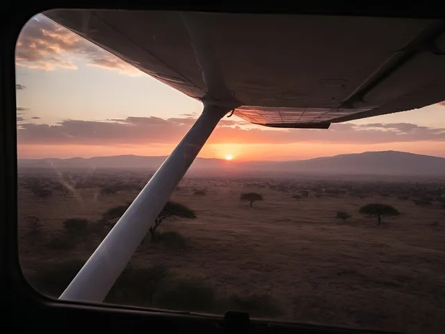
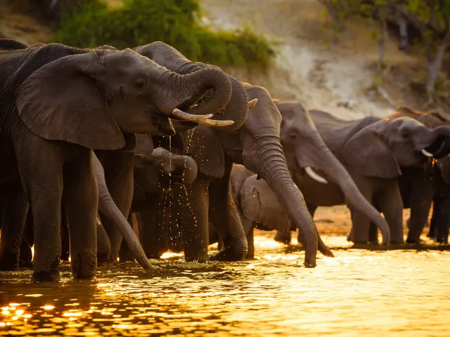

Unsere ausgewählten Fly-In Safaris
Entdecken Sie Namibia, Botswana & Tansania aus der Vogelperspektive

Flugsafari durch Namibia
Reise ansehen ↗
Flugsafari Tansania & Kenia - Über den Weiten Afrikas
Reise ansehen ↗
Botswana & Simbabwe Reise - Wildes Afrika
Reise ansehen ↗Exklusive Flugsafaris mit Africa Royal Tours
Mit einer exklusiven Flugsafari haben Sie die Möglichkeit den wunderschönen Kontinent Afrika aus der Vogelperspektive zu entdecken! Genießen Sie den Blick über das wasserreiche Okavango Delta in Botswana, die unendlichen Sanddünen in Namibia oder erblicken Sie die Big Five aus der Luft über Tansania. Dabei reisen Sie ganz bequem per Kleinflugzeug und erreichen abgelegene Orte, die Ihnen sonst verborgen blieben wären. Eine Flugsafari mit Africa Royal Tours kombiniert die besten Lodges Afrikas mit spektakulären Aussichten auf einzigartige Landschaften. Heben Sie ab und spüren Sie die grenzenlose Freiheit bei einer Flugsafari! Gönnen Sie sich das Besondere!
Ihre Reise persönlich planen
Wir stimmen Route, Unterkünfte und Reisedaten persönlich mit Ihnen ab.
Persönliche Beratung anfragen ↗